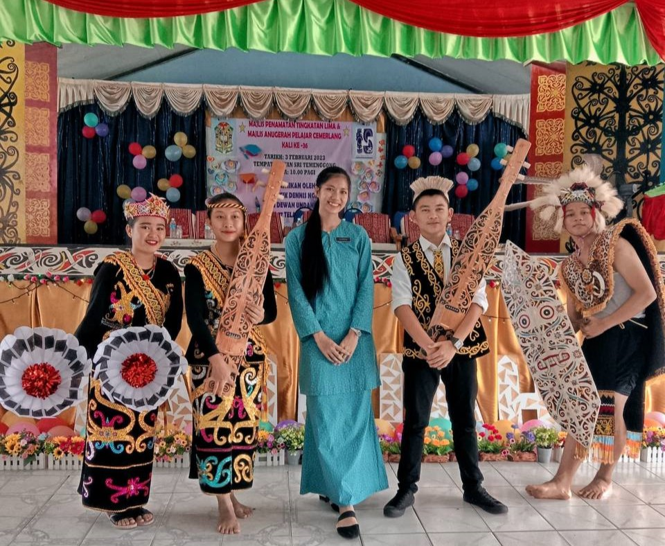

WORK EXPERIENCES

MyStep Teacher: SMK Temenggong Datuk Lawai Jau (2023)
Roles: Monitored students behavior during classes and provide additional support to students with learning difficulties. Directed learning to achieve students engagement with materials. Work closely with other teachers to plan and coordinate work efficiently.

Part-time gym receptionist:Beach Republic (2022)
Roles: Assists the gym users to maintain the gym equipment and other facilities to ensure it is safe to use. Answering and forwarding calls and providing information to potential customers. Accurately maintain the internal accounts system, update data regarding sales and inventory.
PROJECTS AND VOLUNTEERING EXPERIENCES

"Projek Komuniti Gotong-Royong Membina Saluran Bekalan Air Bersih di DUN N77 TELANG USAN(LONG SULING)"(2024)
Roles: Reached out the community in rural areas to help them in getting clean water for their water supply. Get to spend a month with the community to be able to complete the project where we spend time together to support and lend a hand to ensure everything that had been planned out went smoothly.

ASEAN Women Interfaith Camp(2022)
Roles: This program was held virtually which we connected to ASEAN country which are Brunei Darussalam, Cambodia, Indonesia, Lao PDR, Malaysia, Myanmar, Philippines, Singapore, Thailand and Vietnam to showcase the variety culture, races and community.

ASEAN Youth Interfaith Camp(2021)
Roles: Program was held virtually which was organised by Indonesia to strengthen the culture of peace in ASEAN community, especially the youth and the theme was "Championing Youth as Agents of Interfaith Harmony".Represent Malaysia for community based project showcase which highlighted the Interfaith Harmony Walk"Unity is Our Calling".

World Merit UiTM Cawangan Sarawak(2021)
Roles: Assigned as the Head of Department for Community, Culture and Management Department where we conducteda virtual project of Malaysian Sign Language and sharing some basic sign language with the committee members to raise awareness regarding to the sign language among the community.
FOLLOW ME ON: